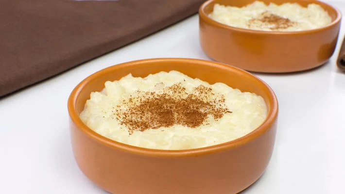

Receitas de Preguiçoso
ARROZ DOCE SIMPLES E TRADICIONAL

| Tempo |
Porção |
| 35 Min |
10 Porções |
INGREDIENTES
- 3 xícaras de arroz
- 6 xícaras de água
- 3 xícaras e 1/2 de açúcar
- 1 litro de leite
- 1 pitada de sal
- cravos (a vontade)
- canela (para decorar)
MODO DE PREPARO
- Coloque numa panela em fogo alto o arroz, a água, os cravos e uma pitada de sal.
- Espere ferver, então abaixe o fogo e tampe a panela, deixe o arroz secar a água.
- Após secar a água adicione o leite e o açúcar, mexa e espere ferver.
- Quando ferver abaixe o fogo, mantenha a panela destampada e mexa para não pregar no fundo da panela.
- Assim que a calda engrossar, borbulhando lentamente, desligue o fogo.
- Coloque em forminhas de sobremesa e coloque canela para decorar.
Adicionar Comentários